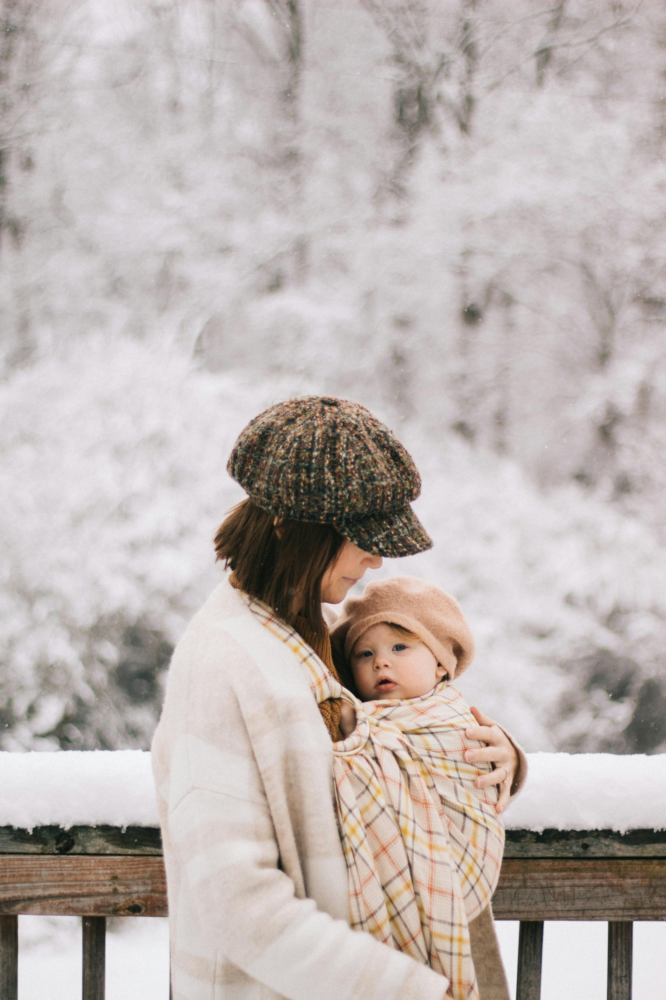

Tu tienda de confianza para todo lo que necesitas para tu bebé
Bienvenidos a nuestra tienda
Ubicados en el corazón de Almería, en Finca Santa Isabel, P.º de la Caridad, s/n, 04008 Almería, ofrecemos todo lo necesario para el cuidado de tu bebé. Desde ropita adorable hasta los mejores productos de higiene, alimenticios y accesorios para que tu bebé esté siempre cómodo y feliz.
¡Pasea con tu bebé de forma cómoda y segura!
Descubre nuestra selección de mochilas de porteo ergonómicas, diseñadas para brindar el máximo confort y seguridad tanto para ti como para tu bebé.

Todas las imágenes son CC https://www.pexels.com/es-es/foto/comodo-porteo-de-bebes-en-invierno-en-un-bosque-nevado-29734213/
Mochila de porteo ergonómica
Fabricada con materiales suaves y resistentes, se adapta perfectamente al cuerpo del bebé y del portador.
¡Aprovecha nuestra oferta especial subvencionada por el Ayuntamiento de Almería y consigue un descuento en tu mochila de porteo!
Productos Destacados
Cochecito de bebé
Ideal para paseos cómodos y seguros. Con materiales de alta calidad.
Ropita para bebé
Conjunto de ropa suave y cómoda para tu bebé. Varios colores y tamaños.
Silla de auto para bebé
Seguridad ante todo. Con sistema de anclaje fácil y seguro.
Contacto
Visítanos en nuestra tienda en Almería:
Finca Santa Isabel, P.º de la Caridad, s/n, 04008 Almería